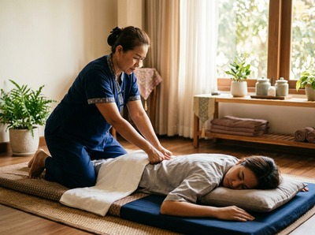

Your first Thai massage can feel unlike anything you have experienced before.
Thai massage is a traditional hands-on technique with roots in the Ayutthaya Kingdom. It combines assisted stretching, acupressure, and rhythmic compression along the body's energy lines. Knowing what to expect removes the guesswork.
It means you can arrive relaxed and ready to get real results. At Serendipity Massage Therapy & Wellness in Glasgow, every session is shaped around your needs from the moment you walk in.
Unlike Swedish or hot stone massage, Thai massage uses no oil. You stay fully clothed throughout. Loose, comfortable clothing that allows a full range of movement is all you need.
The session takes place on a padded floor mat, not a therapy table. Your therapist uses their hands, elbows, knees, and feet to apply pressure and guide you through a sequence of assisted stretches.

The technique works along what are called sen lines. These are the body's internal energy pathways as described in traditional Thai medicine.
The result is a treatment that feels active rather than passive. It sits closer to a mix of deep-pressure work and assisted yoga than a standard relaxation massage.
Your therapist will start with a short consultation. They will ask about areas of tension, any injuries, and your general health.
This matters: Thai massage is not right for everyone, and your therapist needs this information to work safely. You will then be guided through a sequence of positions — lying on your back, rolling onto your side, and sitting upright at different points.
Throughout the session, your therapist applies sustained pressure to key points along the body. They also move your limbs into supported stretches.
The pressure can be adjusted from light to deep at any point. You can book your first session online and note any preferences before you arrive.
Research points to several clear outcomes from regular Thai massage. Studies show it can improve flexibility and range of motion by increasing blood flow and oxygen to muscles.
A 2014 study found that Thai massage combined with targeted exercise reduced pain and improved walking ease in people with knee arthritis. A separate study found that three weeks of Thai massage gave similar pain relief to three weeks of ibuprofen for the same condition.
A 2018 trial also found that Thai massage boosted energy and mental alertness more than Swedish massage, which produced deeper physical relaxation. For Glasgow professionals carrying desk-related neck tension or postural strain, these are real, practical reasons to book — not just an excuse for an hour off.
Some first-timers feel mild muscle soreness in the 24 to 48 hours after a Thai massage. This is similar to how you feel after exercise.
It is a normal response, especially when deeper muscle layers have been worked. Drink water after your session to support recovery.
Light movement such as walking is a good idea. Avoid heavy exercise or intense physical demands on the same day.
Most people leave feeling noticeably looser and calmer. If anything felt too intense, mention it at your next visit so your therapist can adjust. You can book your next appointment online at any time.
If you are new to Thai massage, a traditional Thai massage is the best place to start. It gives your therapist the most scope to address your areas of tension using pressure and assisted stretching.
If you prefer a more flowing style with oils, a Thai oil massage delivers similar outcomes with a different feel.
No. Thai massage is performed fully clothed. Wear loose, comfortable clothing that allows a full range of movement — soft trousers and a t-shirt work well. Your therapist can also provide suitable clothing at the studio if needed.
Thai massage should not be painful, though it can feel intense. This is most common during deep stretches or when pressure is applied to areas of real tension. You can ask your therapist to adjust at any point. Mild soreness after the session is normal and usually fades within 24 to 48 hours.
Sessions run between 60 and 90 minutes. A longer session gives your therapist time to work through the full sequence across the whole body. For a first visit, 90 minutes is often the better choice. It allows for a full consultation and gives your therapist room to address your specific needs.
Swedish massage uses long, flowing strokes with oil and focuses mainly on relaxation and circulation. Thai massage uses no oil, is done fully clothed, and involves active assisted stretching and acupressure. It is more physically engaging. It is also more effective for improving flexibility and range of motion.
It depends on your goals. For general wellbeing and stress management, once or twice a month is a solid starting point. If you are dealing with a specific issue — chronic back pain, postural tension, or sports recovery — your therapist may suggest more frequent sessions at first. Regular massage builds on itself over time.
Most healthy adults can benefit from Thai massage. It is not advised for people who are pregnant, have had recent surgery, have heart conditions, or are undergoing cancer treatment. Always tell your therapist about any health conditions before your session. They will adjust the treatment or advise you if needed.